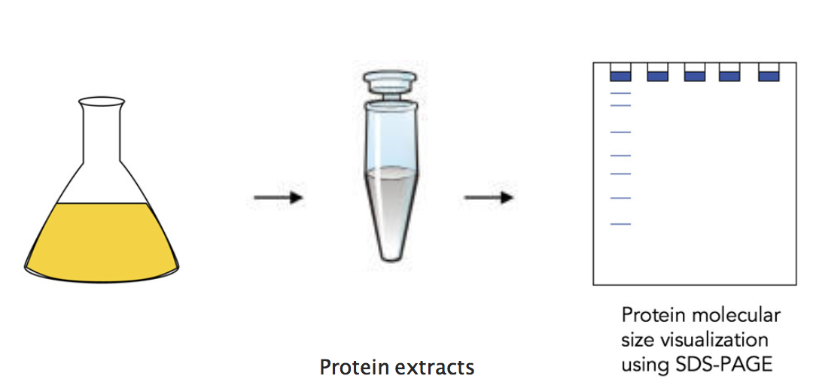

Proof of concept
According to our design, we transfected a targeting plasmid into E.coli BL21 to express fusion protein composed of the protein tCas9 and CIBN. Simultaneously, we transfected GFP,gRNA and CRY2-VP64 plasmid into E.coli BL21. Then, the promoter of GFP were continually repressed by gRNA and tCas9. When exposed to blue light, the N-terminal fragment of CIB1 (CIBN) would interact with CRY2,Subsequently,Binding of the CRY2-VP64 on the upstream sequence of promoter will result in activating promoter via recruitment of the RNA polymerase II by the VP64 subunit of CRY2-VP64 .Generally, the experimental procedure can be divided into four steps:
- Characterization of fusion protein
- Verification of the suppression efficiency of gRNA
- Silencing capability validation
- Targeting capability validation
- Model
Characterization of fusion protein

Figure 1: validate protein
CRY2-VP64:
Stationary cultures of BL21 J23114 was subcultured into fresh media and growth for 4 hours. Subsequent purification of protein from the cell-free supernatant and visualization using SDS-PAGE confirms that proteins of the expected size are present in the supernatant and hence most likely successfully secreted by the engineered bacterial strains.

Figure 2：Western blot analysis of CRY2-VP64 protein levels.
Left :Negative control; Right:CRY2-VP64, ~78.5 kDa
tCas9-CIBN:
Stationary cultures of BL21 pBAD was subcultured into fresh media and induced for 4 hours or 16 hours using different concentrations L-arabinose. Subsequent purification of protein from the cell-free supernatant and visualization using SDS-PAGE confirms that proteins of the expected size are present in the supernatant and hence most likely successfully secreted by the engineered bacterial strains.
Figure 3：Western blot analysis of tCas9-CIBN protein levels.
Left :Negative control; Right: tCas9-CIBN, ~180 kDa
Figure 4: Western blot analysis of tCas9-CIBN protein levels.
Left :Negative control; Right: tCas9-CIBN, ~180 kDa
Verification of the suppression efficiency of gRNA
To ensure the suppression efficiency of the gRNA,four gRNA sequences targeting different sites of CSPA promoter were designed and transfected into the E. coli strains BL21.Efficient suppression of CSPA promoter in strains BL21 was observed.GFP levels in GFP transgenic strains decrease after inserting a fragment that expresses CSPA promoter gRNA .And the sequence with the best suppression effect was selected for further study.

Figure 5: Results of the GFP-influence under the CSPA promotor
only using different gRNAs targeted to CSPA promoter in BL21.
Silencing capability validation
We next evaluated the effect of tCas9-cibn on suppressing CSPA promoter.GFP expression levels were assayed in strains BL21 after co-transformation with tCas9-cibn and CRY2-VP64 and gRNA in the absence of light conditions.
Figure 6: Silencing capability of tCas9-CIBN
using different
gRNAs targeted to CSPA promoter in BL21.
Compared with control groups, Green fluorescence intensity and mRNA levels were dramatically reduced in groups treated with gRNA and tCas9-cibn.These results suggest that gRNA can specifically guide tCas9 to target upstream of CSPA promoter, thereby inhibiting CSPA promoter to reduce GFP expression levels.
Activation capability validation
Spatially controlled activation of gene expression was achieved in strains co-transfected with the LACE system, a reporter vector containing a gRNA target sequence upstream of CSPA promoter and the eGFP gene.Strains transfected with LACE and incubated in the dark did not show a significant difference in eGFP levels compared to control groups transfected with empty plasmid.Strains containing the LACE system and gRNA exhibited significantly brighter eGFP fluorescence intensity when illuminated compared to when incubated in the dark.Activation of the eGFP reporter in strains transfected with the gRNA and LACE constructs, the gRNA and tCas9-VP64 expression plasmid or an empty plasmid as a negative control was quantified after 24 hours of illumination or incubation in the dark.

Figure 7: Activation capability of LACE system
using gRNA-R1 targeted to CSPA promoter in BL21.
Result
The LACE system provides a straightforward and robust optogenetic method to regulate the expression of endogenous genes using the CRISPR/tCas9 system. When co-transfected with gRNAs into E.coli that are stimulated with blue light, LACE produces a high level of transcriptional activation that is, in some cases, comparable to those observed with tCas9-VP64.